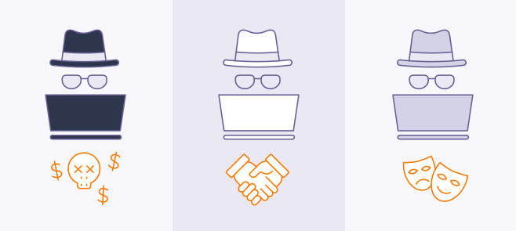

¿Que es un hackeo?
El hackeo es la aplicación de tecnología o conocimientos técnicos para superar alguna clase de problema u obstáculo.
Nótese que nuestra definición no incluye, intencionadamente, nada de naturaleza delictiva.
Hay 3 tipos de hackers:
Dependiendo de sus motivaciones, los hackers pueden pertenecer a tres grupos: sombrero negro, sombrero blanco y sombrero gris.
Sombero negro
Un hacker de sombrero negro es el turbio ciberdelincuente descrito antes. Son los que rompen sistemas de ciberseguridad para obtener acceso
ilegal a un equipo o una red. Si un hacker de sombrero negro descubre una vulnerabilidad de seguridad, la aprovechará o alertará a otros hackers de la oportunidad,
normalmente por un precio.
Sombrero blanco
Los hackers de sombrero blanco son la contrapartida de los de sombrero negro. Son igual de habilidosos, pero en vez de tener objetivos
delictivos, estas almas bondadosas dedican sus talentos a ayudar a las empresas a preparar sus defensas digitales. Un hacker de sombrero blanco intentará de forma
intencionada entrar en un sistema, con permiso de su propietario, para identificar los puntos débiles que hay que reparar. Este tipo de trabajo también se conoce
como «hackeo ético».
Sombrero gris
Entre estos dos tipos están los hackers de sombrero gris. Ni son el colmo del altruismo, como los hackers de sombrero blanco, ni se dedican a cometer delitos.
Mientras que los sombreros blancos obtienen permiso antes de probar las vulnerabilidades de un sistema, los sombreros grises se saltan esa parte y van directos
al hackeo.

Tipos más comunes de hackeo
Hackeo por beneficio económico
Los hackers de sombrero negro solitarios y los colectivos de hackeo suelen ser ladrones. Sus ciberdelitos buscan robar
dinero directamente, preparar un robo posterior mediante el secuestro de datos o vender los datos obtenidos a otros ciberdelincuentes.
Si un hacker se hace con sus credenciales de usuario, o incluso con pequeños datos personales, puede intentar romper su contraseña o atraparlo en un ataque de phishing.
En cualquier caso, el objetivo final es convertir el dinero de la víctima en el del hacker.
Espionaje corporativo
La competencia en algunos sectores es tan feroz que no sorprende que, a menudo, las empresas estén dispuestas a mancharse las
manos con tal de imponerse a sus rivales. El espionaje corporativo (o industrial) es la aplicación comercial del hackeo, el malware, el phishing y otras desagradables
técnicas de espionaje con el fin de obtener información interna de un competidor comercial; también se conoce a esto como hackeo de información.
Hackeos entre estados
En ocasiones, los gobiernos (y grupos de hackers con patrocinio estatal) atacan directamente a otros gobiernos.
Sin embargo, lo más habitual es ver hackers con apoyo estatal que atacan corporaciones o instituciones como bancos o redes nacionales de infraestructuras.

¿Es ilegar hackear?
Que el hackeo sea o no un ciberdelito depende del consentimiento. Los hackers de sombrero blanco recaban
permiso de sus objetivos antes de hackear sus sistemas y tienen la obligación de revelar cualquier vulnerabilidad que encuentren. Fuera de este contexto, el hackeo de
seguridad es ilegal.
Los hackers delincuentes operan sin consentimiento y violan la ley. Nadie va a conceder permiso a un hacker que explica amablemente que lo que busca es dinero o valiosos
secretos comerciales, así que los sombreros negros operan siempre en la sombra. Incluso el hackeo de sombrero gris puede ser peligroso si el que ha sufido el hackeo decide
denunciar a las autoridades tras revelarse la acción.
Al realizar un hackeo podrían acusarte de cargos como pueden ser:
- -Acceso ilícito a sistemas informáticos.
- -Interceptación ilícita de datos informáticos.
- -Interferencia en el funcionamiento de un sistema informático.
- -Falsificación informática mediante la introducción, borrado o supresión de datos informáticos.
- -Fraude informático mediante la introducción, alteración o borrado de datos informáticos, o la interferencia en sistemas informáticos.